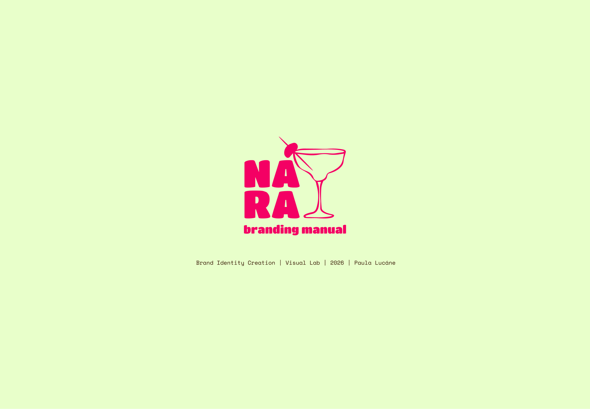
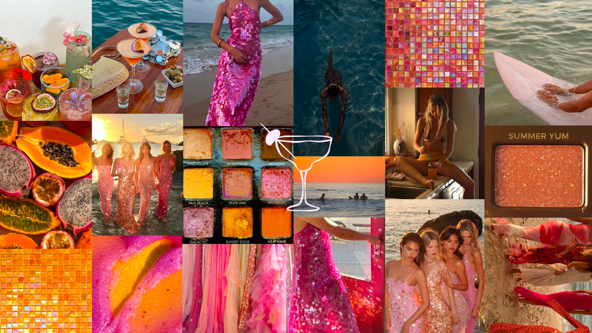
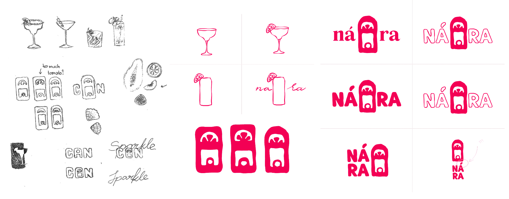
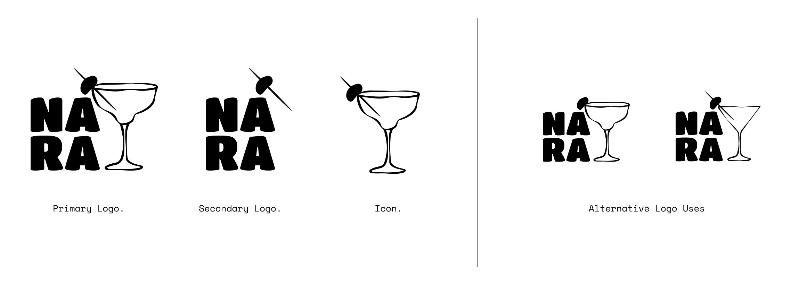
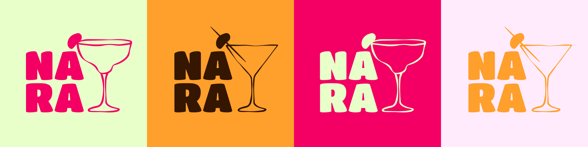
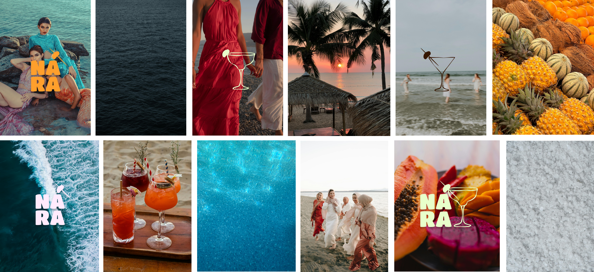
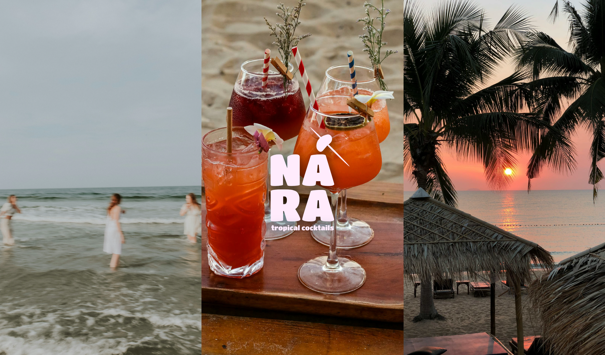

BRAND IDENTITY
Brand Concept
NÁRA is a drink brand that sells tropical inspired cocktails in a can. This provides easy access to a delicious beverages in any setting. It is perfect for a tropical beach holiday, where great taste and a beautiful look is no less important than convenience.
This brand is made for women in their 20s and early 30s, chasing an aesthetic lifestyle — the kind that looks just as good on Instagram as it feels in the moment. It leans into an influencer-inspired world where everything is a little sun-soaked, a little curated, and always camera-ready. Designed for ease, it delivers cocktails without the effort — no mixing, no measuring, just instantly photogenic drinks. With a tropical, vacation-state-of-mind at its core, it's all about shared experiences: girls' nights, pre-drinks, golden hour photos, and bachelorette getaways where the vibe is fun, carefree, and just a little bit extra.
NÁRA is not only about cocktails - it's much more about the feeling.
Mood Board

Process
The logo creation process was a long but a rewarding one. I started with on-paper sketches that were related to cocktails and a tropical beach. I took inspiration from drink can tabs. While I really liked the tab idea, I wanted to incorporate the accent on the á a but more, so I kept working until the final logo was born...

Logo
This contrasting logo design is bold & noticeable. The thinner cocktail glass illustration adds an element of playfulness and is reminiscent of ocean waves. The accent on á is now a cocktail olive on a cocktail pick. It can also become a lime wedge on the rim of a margarita glass.
The secondary logo should be used in instances where the product is unmistakable. The icon can be used as an illustrative and visual element in brand content. The logo use can be adapted to cocktail-specific contexts as seen in the alternative use examples. It should always be intentional and done sparingly.

Colours
I already knew I wanted the hot pink to be one of my colours. The lighter green complemented it well. From there on the rest of the colours came together rather easy. I only contemplated between a deeper sea blue and an espresso martini brown. The blue would have fit the Caribbean better, but I struggled to find a shade that would work well with others. Ultimately, I chose the strong brown instead.
The final chosen colours are fun, bright, tropical and refreshing - just like NÁRA cocktails.
Primary Colours.
Secondary Colours.

lime green
#e8ffca
232, 255, 202
9, 0, 27, 0

dragonfruit pink
#e8ffca
232, 255, 202
9, 0, 27, 0

mango orange
#e8ffca
232, 255, 202
9, 0, 27, 0

seashell lilcac
#e8ffca
232, 255, 202
9, 0, 27, 0

espresso brown
#e8ffca
232, 255, 202
9, 0, 27, 0
The brand colours should be used in the following combinations.

Brand Assets
These are supporting visual vector-based assets, including the logo but not exclusively, that can be used in branded content and visuals, such as print collateral, promotional videos and other advertising material.
Brand Typography
Brand Imagery
These are licensed images that can be used when producing brand visuals. These specific images have been hand-picked to carry the brand message into the world. For simple visuals and content, they can be used in combination with the logo and other brand assets as shown.

The images can also be combined in three for horizontal headers and such. (not the hero image/key visual)
